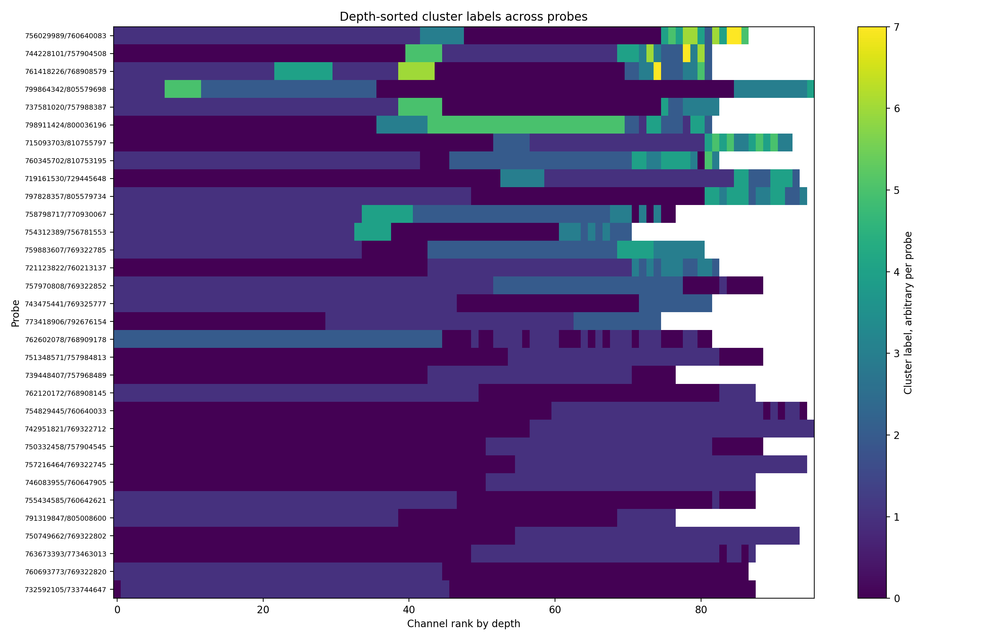

K-Means clustering of local field potential timeseries along a silicon probe.

Here's a mysterious image generated by code written by an artificial intelligence based on real neural data. The data came from electrophysiological recordings conducted by inserting silicon probes into the mouse brain. The signals are summed local dendritic synaptic currents (local field potentials, or LFPs). The channels of the probe exhibit autocorrelation. This led me to consider quantizing the timeseries vectors of the channels using K-Means clustering. This is a visualization of the clusters along the probes.
Voici une image mystérieuse générée par du code écrit par une intelligence artificielle à partir de vraies données neuronales. Ces données proviennent d'enregistrements électrophysiologiques réalisés en insérant des sondes en silicium dans le cerveau de souris. Les signaux correspondent à la somme des courants synaptiques dendritiques locaux, appelés potentiels de champ locaux, ou LFP. Les canaux de la sonde présentent une autocorrélation. Cela m'a amenée à envisager de quantifier les vecteurs de séries temporelles des canaux à l'aide d'un clustering K-Means. Voici une visualisation des clusters le long des sondes.